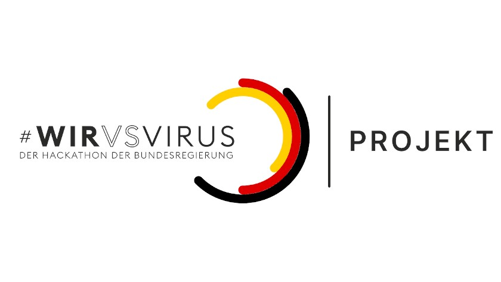

Elementary School
2005 - 2009
Highschool A-Level incl. IT internship
2009 - 2017
College
2018 - 2021
My set of knowledge and abilities create a spectrum that ranges from interaction, interface,
& concept design over management techniques to technical implementation.
For coding I have so far used JS, HTML, CSS and am willing to learn new languages
and frameworks.
Even though I so far had to focus on coding I am also very active when it comes to developing
concepts and designing the interaction between the user and other entities as well as
the look & feel of the interfaces.
My specialisation in the intersection of those areas is what makes me
valuable when working with and creating novel media.
I like to structure things and with good logical thinking I see my role
in the team as someone who can integrate methodology in the creative
workflow and can moderate discussions team-internally and with stakeholders.
What I like most about the industry that I will be in is the mixture of creative and technical work. This is the very thing that I will try to keep when I leave university. I need variety. Change. Diversity. Ideally I am going to be active in a field and position that allows temporary switches between multiple realms of activity. Specifically, I am curious to create smart environments with design of ubiquitous computing. Collaboration with architects or psychologists is a safe bait for me. Apart from that I want to work in an environment that allows me to learn and grow both personally and academically in terms of pure knowledge, soft skills, etc. If you can offer any of those aspects, then that is very likely to be the reason why I send you this portfolio. Enjoy skipping through it!

Are we a match? Click me!
Design
Concepts
Teamworking
Coding
A Starting Point
In our introductory semester of my undergraduate program we
started with learning about what design is and came in touch with
it visually.
Interactive Media Design
is a project based program,
though the first semester was one of smaller scale. The given topic
for this semester was to design a food truck service.
Out of that service we should then fashion a website and a
 prototype for an interface our guests would use inside the truck.
We played around with color palettes, tried different layouts and
interaction methods until we agreed on the final outcome that we
then implemented.
prototype for an interface our guests would use inside the truck.
We played around with color palettes, tried different layouts and
interaction methods until we agreed on the final outcome that we
then implemented.
Game Programming
For our subject Creative Coding I developed a game. Based on the animated TV-show Rick and Morty I
created a browser based platforming game starring the show's two main characters with common and
unique abilities, items and enemies. You can check out and play
the result here.
Even though I retrospectively find the lack of UX comfortability troubling I recieved quite a lot of
 very good feedback from both professors and students for the features I build.
This was largely achieved by teaching myself object oriented programming, which
was planned to be the content of the second semester of coding class.
very good feedback from both professors and students for the features I build.
This was largely achieved by teaching myself object oriented programming, which
was planned to be the content of the second semester of coding class.
Experimental Design
With the right combination of storytelling
and gamification we created a story of a traveling family where the user
can take various actions that cause different outcomes at the end of the
simulation. It's purpose was to show the user how little mondane (partly subconscious)
decisions affected their environment in the long run.
 We thought about where and how this project would be used to raise
further environmental awareness. Additionally, in this semester we were busy
planning an exhibition called interactive future [if] where we were to
present our projects, invite speakers and have meet and greets with various companies.
We thought about where and how this project would be used to raise
further environmental awareness. Additionally, in this semester we were busy
planning an exhibition called interactive future [if] where we were to
present our projects, invite speakers and have meet and greets with various companies.
Machine Learning
While I've
had read about the principles of neural networks before I have not been
in touch with the actual developement of a working model.
This optional course was very tough for me but by reading articles and
following tutorials I finally was able to
create a neural network that allowed you to capture footage through your webcam
 and then transfer it into the style of
this painting
in a live manner.
This was also the first time I came in touch with Python and libraries which
made it surprisingly hard for me to achieve my goals. I am still
very interested
in learning more about artificial intelligence.
and then transfer it into the style of
this painting
in a live manner.
This was also the first time I came in touch with Python and libraries which
made it surprisingly hard for me to achieve my goals. I am still
very interested
in learning more about artificial intelligence.
Science & Methodology
The third semester was so far the most important one in my academic career.
It taught me not to depend on subjective perceptions when making decisions in
the design process. I was writing a research paper as an introduction to scientific design.
The semester project was about preventing roadkills. We tried a lot of different
methodical approaches to gain objective, fact-based insights to solve the problem.
 We were researching a lot, created user profiles,
had interviews and even contacted the police to have a face-to-face conversation
in order to gather more data that could help us.
In the end we created a project that we saw great chance in for the automotive
industry to adopt and actually implement it.
I really liked this semester because we followed the inductive top-down workflow
to achieve the solution to the problem, which included a variety of sensory feedback
channels.
We were researching a lot, created user profiles,
had interviews and even contacted the police to have a face-to-face conversation
in order to gather more data that could help us.
In the end we created a project that we saw great chance in for the automotive
industry to adopt and actually implement it.
I really liked this semester because we followed the inductive top-down workflow
to achieve the solution to the problem, which included a variety of sensory feedback
channels.
Physical Computing For our prototype I used an Arduino with an ultrasonic sensor and a slider potentiometer that would allow the user to control the speed of a self-made driving simulation. This simulation showed how our developed system would notify the driver when a wild animal was spotted and how it would react when the driver did not respond accordingly to those warnings. For this setup to work I needed server-side programming, which we were introduced to with NodeJs in this third semester. I also learned how to use packages by making use of a library called Johnny-Five to use its serial port to connect my computer to the Arduino.
Reply Creative Challenge
With three colleagues out of my semester we signed up for a challenge that would let
you choose a category for a 2.5-day project to create a campaign for different companies,
depending on the category. We went with Durex' aim to get millenials and generation Z
 to talk about their sexuality more openly.
We took an approach that included illustration to convey diversity and humor in given context.
Though we were not among the selection of the best campaigns after the challenge ended,
we saw that Durex posted advertising campaigns on Instagram that were very similar to what
we created.
to talk about their sexuality more openly.
We took an approach that included illustration to convey diversity and humor in given context.
Though we were not among the selection of the best campaigns after the challenge ended,
we saw that Durex posted advertising campaigns on Instagram that were very similar to what
we created.
ThingsCon Hack Challenge
The ThingsCon in Rotterdam is, as one can tell by the name, about the
internet of things and smart connected devices in general.
The so called Hack Challenge also offered different problems that participants
were to develop a concept for a solution. In our case we picked a ventilation problems
 that the architecture of the building (a repurposed public pool) caused. We proposed
that with help of different sensors and the installation of panels on the windows
we could control the airflow in dependency on temperature, air humidity,
wind direction and strength. This solution would also allow us to create airflow
when there was none.
that the architecture of the building (a repurposed public pool) caused. We proposed
that with help of different sensors and the installation of panels on the windows
we could control the airflow in dependency on temperature, air humidity,
wind direction and strength. This solution would also allow us to create airflow
when there was none.
COVID Hackathon After the Corona virus breakout our university had to switch to remote classes. While working from home does come with its benefits, we did not like not seeing each other in person. We could relate to those that were locked up in isolation with depression and could not have any or just the bare minimum of social contact. So we participated in the official hackathon of the German government.  The 2.5-days project turned into a concept that would connect neighbours and let them communicate with each other asynchronously in a gamificated way. With that we were trying to achieve that the people in neighbourhoods could start to support and take care of each other more.